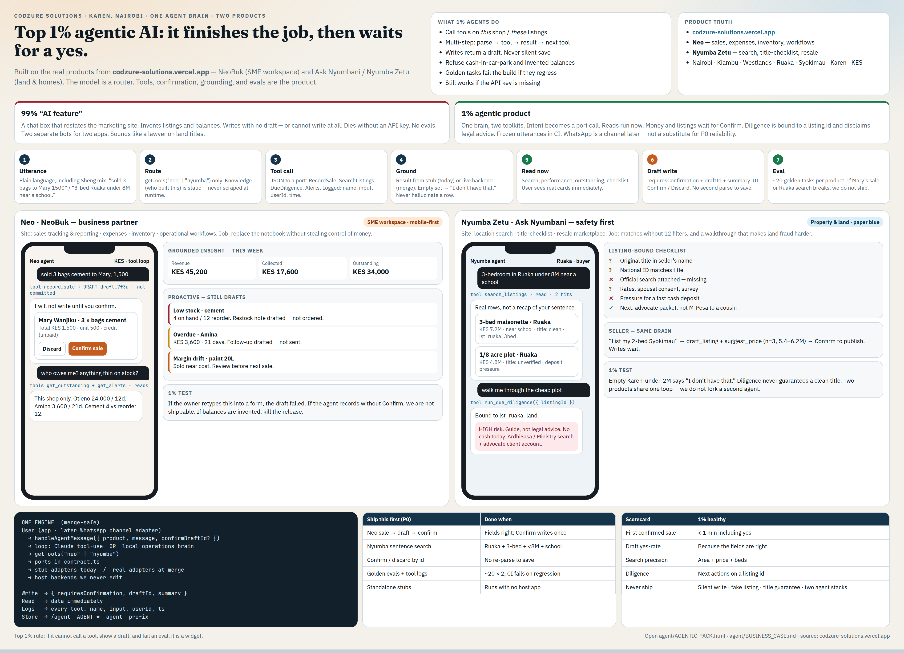

Codzure Solutions · Open this HTML, the PNG, or BUSINESS_CASE.md. Word .docx will not preview in Cursor.
Product truth: codzure-solutions.vercel.app
A top 1% agent finishes a job with tools on real product data, then waits for a yes before anything important is saved. The model is a router. Confirmation, grounding, and evals are the product. A CVM slide is optional; this standard is not.

Figure 1. Dual-product agent loop — also demo.html.
| 99% chat widget | 1% agent |
|---|---|
| Restates the marketing site | Calls tools on this shop / these listings |
| Invented numbers and properties | Empty result says “I don’t have that” |
| Silent write, or cannot write | Draft + Confirm / Discard by id |
| Dies without an API key | Local operations brain still completes P0 jobs |
| Two bots, no evals | One brain, two toolkits, golden tasks in CI |
| Sounds like a lawyer | Listing-bound checklist; not legal advice |
Utterance → route by product → tool call to a port → ground in stub/live data → read now or draft write → eval on frozen tasks.
| Neo | Nyumba Zetu |
|---|---|
| “sold 3 bags cement to Mary, 1,500” → draft → confirm | “3-bed Ruaka under 8M near a school” → real listings |
| “who owes me?” from this shop’s books | Title walkthrough bound to that listing id |
| Alerts (stock, overdue, margin) as drafts | Seller listing + comps, still confirm to publish |
P0: sale draft, sentence search, confirm-by-id, evals + logs, standalone stubs.
P1: diligence, insights, alerts, seller comps.
P2: WhatsApp as a channel — only after P0 is boring.
Never: silent writes, title guarantees, two agent stacks, fake listings.
Full case: BUSINESS_CASE.md